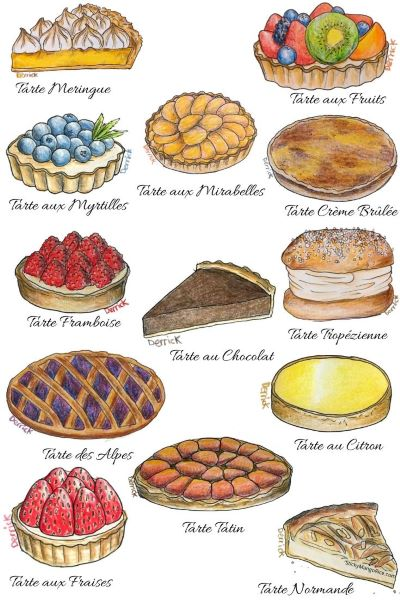

The history of french pastry
Choose topic
Important Moments In The History Of French Pastry & Confectionary
The puff pastry was created in 1540 by Popelini.26 years later, in 1566, the oublies were renamed confectioners.It is believed that the foliated pastry was invented in 1630 by a French painter.In 1638 France tasted tartelettes amandine for the first time.1660 was the year whipped cream was invented by Vatel, the cook of the Prince of Condé. 1686 was the year that started the French café culture in France. Le Procope, the first Parisian café, served coffee, tea, ice cream, and chocolate.1778 is the year the first nougat factory was founded. Macarons were invented in 1793.1808 is the year brioche became a very popular pastry in Paris. 12 years later, the piping bag was invented. In 1830 the ice cream machine was born.The ganache was invented in 1850 by a Parisian confectioner.In 1879 the first Christmas log was made by Charabot. Candied chestnuts became a thing in 1882.In 1890 tarte bourdaloue (French pear tart) was created.In 1919 France decided to create professional courses for confectionary apprentices.The first ice cream factory in France opened its doors in 1924.
French Pastries And Confectionary Characteristics
Now that you know the most important moments in the history of French pastry and confectionary, it is time to talk about what makes French pastry and confectionary so special. What’s the secret? Or is there a secret that the world doesn’t know?You might have noticed that French pastries are very flaky and that’s because French cooks use a lot of butter to make them. Not to mention the fact that it takes a lot of time and effort to create that perfect flaky texture and amazing taste.
Some French desserts such as chocolate mousse or fruit-based mousse are very fluffy and light but meringues can also be characterized as fluffy and light even though the texture is completely different. French desserts are also creamy and rich and that’s usually because French confectioners know how to make the best custard cream. French desserts we love so much incorporate at least two of the characteristics mentioned above.Creating the amazing French pastries and confectionaries is a long process that takes several hours and it involves a lot of dedication and attention to details so you can say the secret lies in the technique and passion, not in the ingredients. We can also say that during all the centuries of experimenting with recipes and techniques, French confectioners discovered how to combine various textures and tastes to obtain the best pastry or the best dessert.
The Best French Pastries And Confectionaries
From amazing fruit desserts to decadent chocolate desserts and rich cream desserts, here are the best French pastries and confectionaries:
